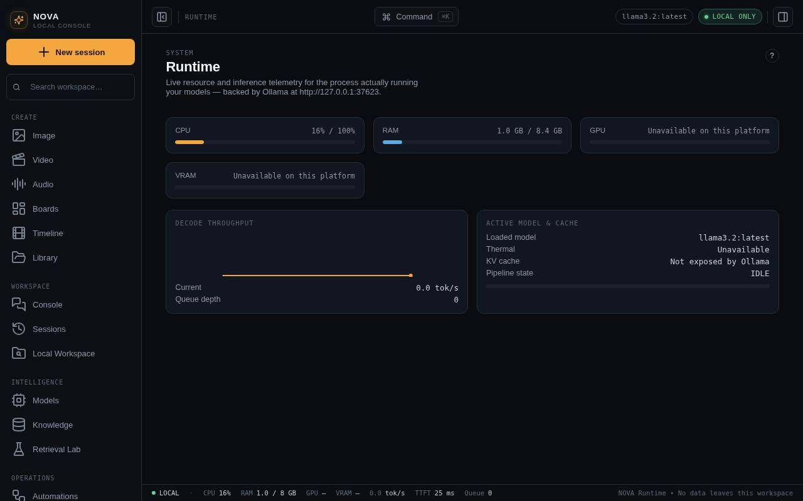
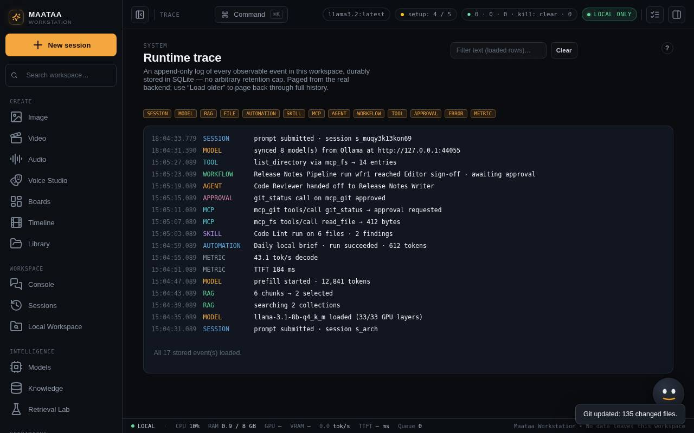
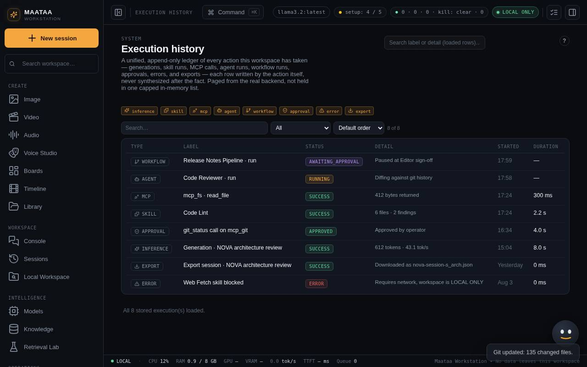

Diagnostics, Runtime, Trace and History
Find out what is working and what is not. Diagnostics checks each part, Runtime shows the machine, Trace is the live feed and Execution History is the lasting record.
Diagnostics
Open Diagnostics first whenever something fails. It checks each part separately, so you can tell a Maataa problem from an Ollama problem:
| Check | What it means |
|---|---|
| Maataa Workstation backend | The local server. If this fails, nothing else works. |
| Ollama inference engine | Needed for chat, embeddings, agents and automations. |
| Model loaded | A synced model is selected and ready. |
| Knowledge index | Your collections and their indexing state. |
| Privacy boundary | Whether anything can leave this computer. |
| Automation health and Scheduler | Enabled automations and the timer that runs them. |
| Telemetry loop and Trace buffer | The live counters and activity feed are updating. |
Image, video, audio and transcription engines are checked on the Support tab of Help & Support.
Press Run diagnostics to check again. The command palette (⌘K) has Run diagnostics too.

Runtime
Runtime shows the local service, CPU, memory and, where macOS reports it, GPU use. Some values (thermal state, video memory) are not available on every Mac; Maataa shows "unavailable" rather than guessing.

Trace
Trace is a live feed of recent activity: requests, tool calls, agent steps and approvals as they happen. Use it to watch a run in progress.

Execution History
Execution History is the lasting record of inference, skills, agents, workflows, approvals and other actions. It is paged from the server, so it covers everything, not only what is on screen. Search, filter by status (for example failed) and open an entry to see its input, output, timing and error. A support report includes the most recent failed entries.

Status bar
The bar along the bottom shows the backend state, the loaded model and the privacy state (for example LOCAL ONLY) at a glance.